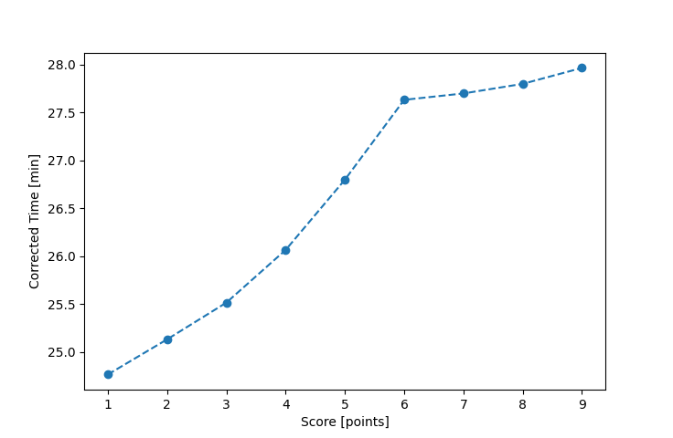

| Wind: | 2-3 (BFT) |
|---|---|
| RC: | Barry_O, Rod_H |
| Date: | July 30, 2017 |
| Notes: | M2 90 |
| Rank / Score | Name | Boat | Input Time [mm:ss] | Input Offset [mm:ss] | Race Time [mm:ss] | Race Time [s] | Handicap | Corrected Time [s] | Corrected Time [mm:ss] |
|---|---|---|---|---|---|---|---|---|---|
| 1.0 | Mike_F | SF | 24:52 | 00:00 | 24:52 | 1492 | 1.00400 | 1486 | 24:46 |
| 2.0 | Ron_F | F5 | 24:17 | 00:00 | 24:17 | 1457 | 0.96600 | 1508 | 25:08 |
| 3.0 | Art_M | SWSX | 24:28 | 00:00 | 24:28 | 1468 | 0.95900 | 1531 | 25:31 |
| 4.0 | John_T | US-1 | 23:48 | 00:00 | 23:48 | 1428 | 0.91300 | 1564 | 26:04 |
| 5.0 | Lewis_V | BCN | 23:19 | 00:00 | 23:19 | 1399 | 0.87000 | 1608 | 26:48 |
| 6.0 | Bill_P | SF | 27:45 | 00:00 | 27:45 | 1665 | 1.00400 | 1658 | 27:38 |
| 7.0 | Xavier | SWSX | 26:34 | 00:00 | 26:34 | 1594 | 0.95900 | 1662 | 27:42 |
| 8.0 | Nedra_F | SF | 27:55 | 00:00 | 27:55 | 1675 | 1.00400 | 1668 | 27:48 |
| 9.0 | David_Bu | SF | 28:05 | 00:00 | 28:05 | 1685 | 1.00400 | 1678 | 27:58 |

Application Notes:
All race results are unofficial
View source code at https://github.com/cessnao3/portsmouthracecalc/